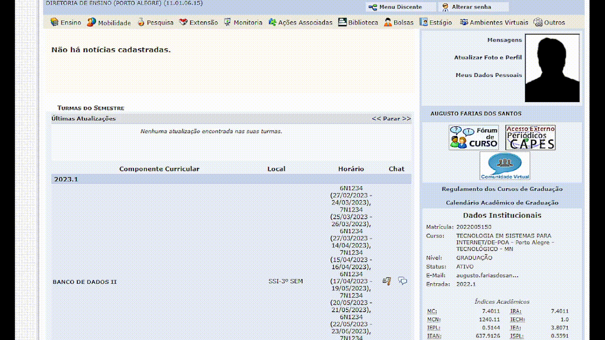

O SIGAA é o Sistema Acadêmico adotado pelo IFRS voltado para
a organização acadêmica do aluno.
Neste ambiente o aluno terá acesso a todas as informações sobre
sua matrícula, assim como as notas, a frequência e um ambiente
para se comunicar com os professores e colegas.
A rematrícula e as solicitações junto à coordenação também são
feitas através do SIGAA.
Como acessar:
O acesso deve pode realizado através da Área do Aluno no site do IFRS, ou pelo site:
https://sig.ifrs.edu.br/sigaa/
Primeiro acesso:
Através do e-mail informado na matrícula, você receberá as informações necessárias (Login e Senha) para
realizar o seu primeiro acesso.
Realizado o Login, você terá acesso à todas as funcionalidades do Sistema Acadêmico.

O MOODLE é o Ambiente Virtual de Aprendizagem adotado pelo IFRS.
É no MOODLE que o aluno realizará o acesso ao conteúdo das aulas enviar trabalhos, participar de fóruns
e, também, trocar mensagens com seus colegas e professores.
Todas informações e materiais relacionados às aulas serão encontrados
no MOODLE pelo aluno.
Como acessar:
O acesso deve pode realizado através da Área do Aluno no site do IFRS, ou pelo site:
http://moodle.poa.ifrs.edu.br/
Primeiro acesso:
Através do e-mail informado na matrícula, você receberá as informações necessárias (Login e Senha) para
realizar o seu primeiro acesso. Realizado o primeiro Login, será solicitado para que faça um cadastro
informando seus dados e e-mail de uso frequente. Confirme seu cadastro clicando no link que foi enviado
para o seu e-mail e pronto!
Você está com acesso garantido à todas as funcionalidades do MOODLE para dar andamento nos seus
estudos.